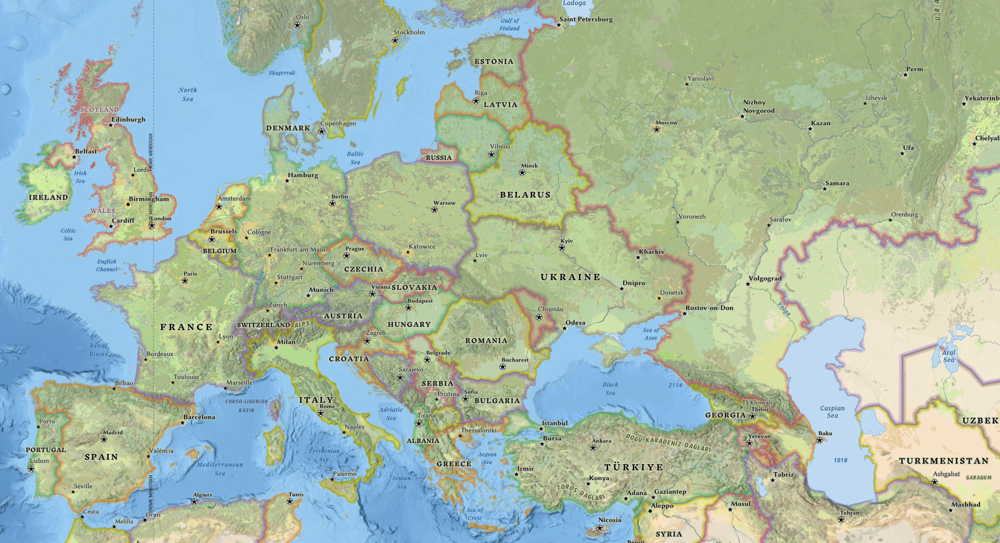

World War II, Soviet Union, Germany, Urban Warfare
The Battle of Stalingrad was one of the most decisive campaigns of World War II. What began as a German drive toward the Volga and the Caucasus ended with the destruction of the German Sixth Army and a strategic shift that Germany never reversed.
The city carried symbolic importance because it bore Stalin's name, but its real value also lay in transport links and its position on the Volga. German planners hoped that taking it would secure the flank of their southern offensive and damage Soviet morale.
Industrial war reached an extreme intensity at Stalingrad. Air bombardment reduced the city to ruins, but the destruction often helped defenders by creating broken terrain ideal for close fighting and concealment.
The battle became a brutal urban struggle measured in factories, apartment blocks, stairwells, and cellars. Soviet defenders held on in small groups at extraordinary cost, preventing the Germans from converting local gains into full control.
While German forces concentrated on seizing the city, Soviet command prepared a wider counteroffensive against the weaker Axis armies guarding the flanks. This showed the centrality of operational design in mechanized war.
Operation Uranus struck in November 1942 and encircled the Sixth Army. Once trapped, the Germans depended on air supply and political hope rather than realistic logistics.
The Luftwaffe could not sustain the pocket, and relief efforts failed. Starvation, cold, artillery, and continued Soviet assault reduced the trapped army until surrender became unavoidable.
Stalingrad mattered because it destroyed a major German formation, shattered the myth of unstoppable Wehrmacht advance, and transferred the strategic initiative on the Eastern Front increasingly to the Soviets.
It also revealed the totality of industrial war: air power, armor, artillery, mass mobilization, ideological determination, and enormous civilian suffering all fused into one campaign.
For military historians, Stalingrad is a case study in urban warfare, encirclement, logistics failure, and the consequences of political interference in command. It remains one of the defining battles of the twentieth century.